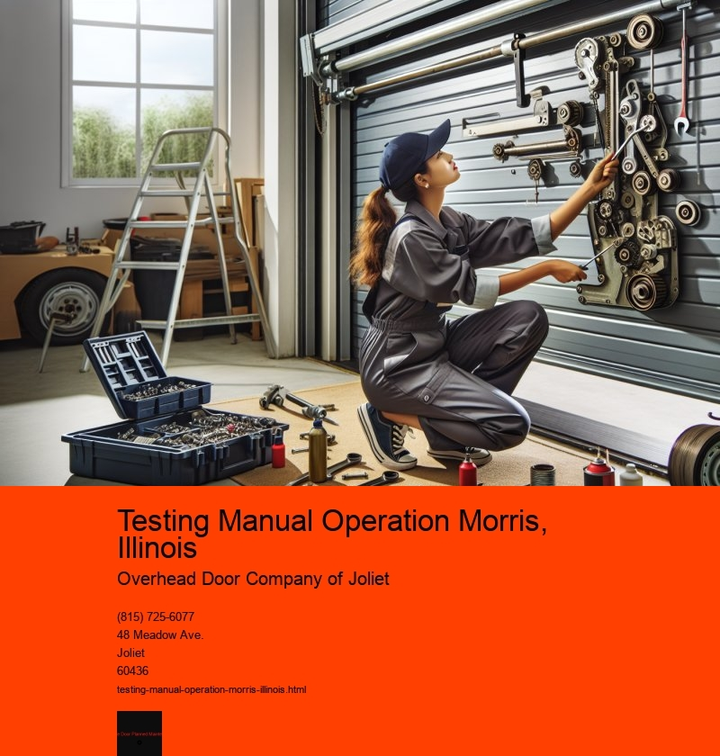

Testing manual operations, especially in a specific location like Morris, Illinois, involves a comprehensive understanding of both the technical aspects of the equipment and the local context in which these operations take place. This essay explores the significance, challenges, and strategies associated with manual testing operations in Morris, Illinois, underscoring the importance of this process in ensuring the reliability and efficiency of various systems.
Morris, a charming town in Illinois, is home to a variety of industries ranging from manufacturing to logistics. In such a diverse industrial landscape, the importance of manual testing operations cannot be overstated. Manual testing is a process where testers manually operate and verify the functionality of systems to ensure they meet specified requirements. Unlike automated testing, which relies on scripts and software to perform tests, manual testing requires human intervention, observation, and decision-making skills. This human element is crucial in identifying nuances and anomalies that automated tests might overlook.
One of the primary reasons manual testing remains indispensable in Morris is the complexity and variability of the systems in use. In industries such as manufacturing, systems often involve intricate mechanical processes that require keen attention to detail. Manual testing allows for a thorough examination of these processes, ensuring that each component functions as intended and meets safety standards. Furthermore, manual testers can adapt quickly to changes and unexpected issues, providing a level of flexibility that automated systems may lack.
However, manual testing operations in Morris face several challenges. One significant challenge is the need for skilled personnel. Manual testing requires individuals who possess not only technical knowledge but also problem-solving abilities and a keen eye for detail. Training and retaining such personnel can be resource-intensive. Furthermore, manual testing can be time-consuming, as it involves meticulous inspection and validation processes. This can lead to increased operational costs and longer project timelines, which can be a hindrance for companies operating in competitive markets.
Despite these challenges, several strategies can enhance the effectiveness of manual testing operations in Morris. One such strategy is adopting a hybrid approach that combines manual and automated testing. While manual testing provides the depth and adaptability needed for complex systems, automated testing can handle repetitive and straightforward tasks efficiently. This complementary approach can optimize resources and improve the overall testing process.
Additionally, investing in continuous training and development for manual testers is crucial. By keeping testers up-to-date with the latest industry trends and technologies, companies can ensure that their personnel are equipped to handle the evolving demands of manual testing. Encouraging a culture of collaboration and knowledge sharing among testers can also lead to more effective problem-solving and innovation.
Local context also plays a vital role in manual testing operations in Morris. Understanding the specific regulations, environmental conditions, and community expectations can inform testing practices and ensure compliance with local standards. Engaging with the local workforce and leveraging their knowledge of the area can also provide valuable insights and improve the overall testing process.
In conclusion, testing manual operations in Morris, Illinois, is a critical component of ensuring the efficiency and reliability of various industrial systems. Despite the challenges of skilled personnel requirements and time-consuming processes, manual testing remains indispensable due to its adaptability and precision. By adopting a hybrid testing approach, investing in training, and considering local context, companies in Morris can enhance their manual testing operations. This not only ensures compliance with standards but also contributes to the overall safety and effectiveness of industrial processes, ultimately benefiting both businesses and the community.
Safety Reverse Test Morris, Illinois
